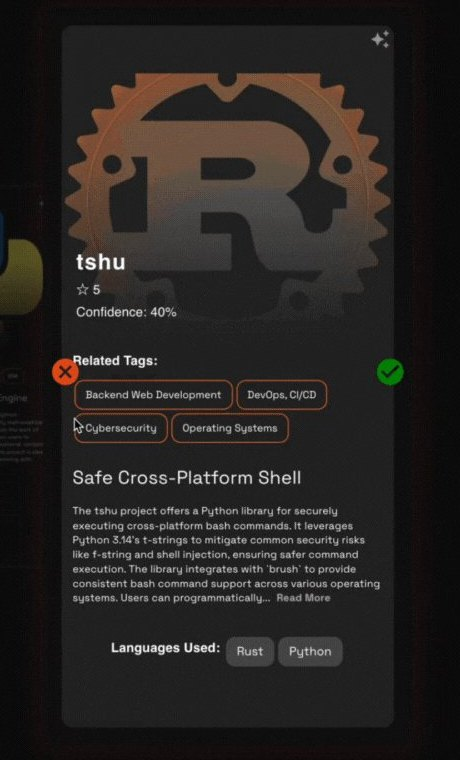

Branch Out · Summer 2025 · Salesforce
Swipe Right on Open Source
A college student who feels intimidated about contributing to open source needs to find a project that fits their level, but GitHub shows the biggest, scariest repos first.
1 of 30picked from 3,000+ applicants
192commits as a team
How It Went
-
Jun 2025Research
Talking to Our Cohort
Everyone says contribute to open source. Then you open GitHub and the top results are the biggest, scariest repos.
We interviewed a few students in our cohort. They wanted to start but didn't know where, and they described themselves by year in school, not skill level.
-
Jul 2025Design
Three Questions up Front
Your year, your languages, your interests. Everything after is matched to that.

-
Jul 2025Design
Swipe, Not a List
One repo at a time instead of a wall of results.

-
Jul 2025Tech
AI Summaries
READMEs are written for maintainers. I built the Gemini client that explains each repo in plain language.

-
Aug 2025Tech
What I Built
- Accounts, login and signup
- Saving preferences to the database
- The Gemini client
- Swipe with keyboard shortcuts
- Mobile layouts and dark mode
Looking Back
- What worked
- Small pull requests. Three people, one product, no chaos.
- What I'd do differently
- We built a lot before testing the swipe with students. I'd test the core idea first.
- What's next
- Point students to a good first issue, not just a repo.